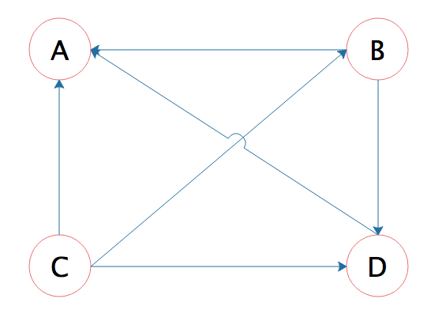
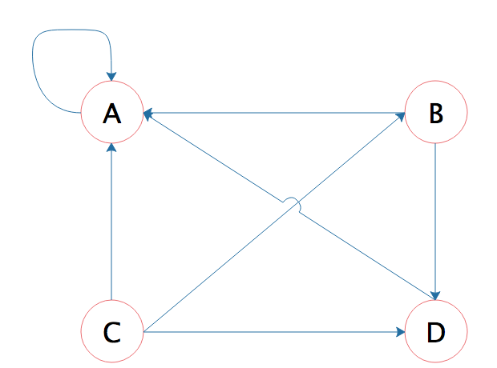
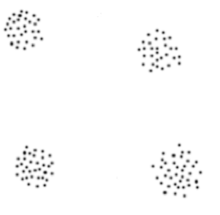
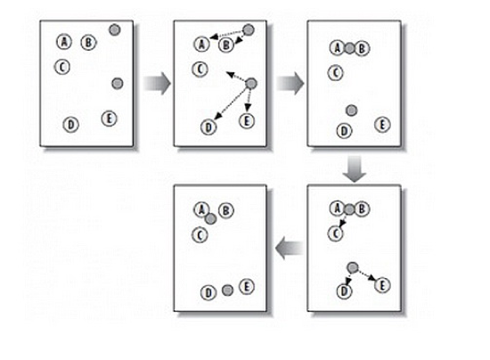

- 00 开篇词 为什么说每个软件工程师都应该懂大数据技术？.md.html
- 01 大数据技术发展史：大数据的前世今生.md.html
- 02 大数据应用发展史：从搜索引擎到人工智能.md.html
- 03 大数据应用领域：数据驱动一切.md.html
- 04 移动计算比移动数据更划算.md.html
- 05 从RAID看垂直伸缩到水平伸缩的演化.md.html
- 06 新技术层出不穷，HDFS依然是存储的王者.md.html
- 07 为什么说MapReduce既是编程模型又是计算框架？.md.html
- 08 MapReduce如何让数据完成一次旅行？.md.html
- 09 为什么我们管Yarn叫作资源调度框架？.md.html
- 10 模块答疑：我们能从Hadoop学到什么？.md.html
- 11 Hive是如何让MapReduce实现SQL操作的？.md.html
- 12 我们并没有觉得MapReduce速度慢，直到Spark出现.md.html
- 13 同样的本质，为何Spark可以更高效？.md.html
- 14 BigTable的开源实现：HBase.md.html
- 15 流式计算的代表：Storm、Flink、Spark Streaming.md.html
- 16 ZooKeeper是如何保证数据一致性的？.md.html
- 17 模块答疑：这么多技术，到底都能用在什么场景里？.md.html
- 18 如何自己开发一个大数据SQL引擎？.md.html
- 19 Spark的性能优化案例分析（上）.md.html
- 20 Spark的性能优化案例分析（下）.md.html
- 21 从阿里内部产品看海量数据处理系统的设计（上）：Doris的立项.md.html
- 22 从阿里内部产品看海量数据处理系统的设计（下）：架构与创新.md.html
- 23 大数据基准测试可以带来什么好处？.md.html
- 24 从大数据性能测试工具Dew看如何快速开发大数据系统.md.html
- 25 模块答疑：我能从大厂的大数据开发实践中学到什么？.md.html
- 26 互联网产品 + 大数据产品 = 大数据平台.md.html
- 27 大数据从哪里来？.md.html
- 28 知名大厂如何搭建大数据平台？.md.html
- 29 盘点可供中小企业参考的商业大数据平台.md.html
- 30 当大数据遇上物联网.md.html
- 31 模块答疑：为什么大数据平台至关重要？.md.html
- 32 互联网运营数据指标与可视化监控.md.html
- 33 一个电商网站订单下降的数据分析案例.md.html
- 34 A_B测试与灰度发布必知必会.md.html
- 35 如何利用大数据成为“增长黑客”？.md.html
- 36 模块答疑：为什么说数据驱动运营？.md.html
- 37 如何对数据进行分类和预测？.md.html
- 38 如何发掘数据之间的关系？.md.html
- 39 如何预测用户的喜好？.md.html
- 40 机器学习的数学原理是什么？.md.html
- 41 从感知机到神经网络算法.md.html
- 42 模块答疑：软件工程师如何进入人工智能领域？.md.html
- 所有的不确定都是机会——智慧写给你的新年寄语.md.html
- 第2季回归丨大数据之后，让我们回归后端.md.html
- 结束语 未来的你，有无限可能.md.html
- 捐赠
38 如何发掘数据之间的关系？
通过上一个模块“大数据分析与运营”的学习，我们知道数据之中蕴藏着关系，如果数据量足够大，这种关系越逼近真实世界的客观规律。在我们的工作和生活中你会发现，网页之间的链接关系蕴藏着网页的重要性排序关系，购物车的商品清单蕴藏着商品的关联关系，通过对这些关系的挖掘，可以帮助我们更清晰地了解客观世界的规律，并利用规律提高生产效率，进一步改造我们的世界。
挖掘数据的典型应用场景有搜索排序、关联分析以及聚类，下面我们一个一个来看，希望通过今天的学习，你能够了解数据挖掘典型场景及其应用的算法。
搜索排序
我们说过Hadoop大数据技术最早源于Google，而Google使用大数据技术最重要的应用场景就是网页排名。
当我们使用Google进行搜索的时候，你会发现，通常在搜索的前三个结果里就能找到自己想要的网页内容，而且很大概率第一个结果就是我们想要的网页。而排名越往后，搜索结果与我期望的偏差越大。并且在搜索结果页的上面，会提示总共找到多少个结果。
那么Google为什么能在十几万的网页中知道我最想看的网页是哪些，然后把这些页面排到最前面呢？
答案是Google使用了一种叫PageRank的算法，这种算法根据网页的链接关系给网页打分。如果一个网页A，包含另一个网页B的超链接，那么就认为A网页给B网页投了一票，以下面四个网页A、B、C、D举例，带箭头的线条表示链接。

B网页包含了A、D两个页面的超链接，相当于B网页给A、D每个页面投了一票，初始的时候，所有页面都是1分，那么经过这次投票后，B给了A和D每个页面1/2分（B包含了A、D两个超链接，所以每个投票值1/2分），自己从C页面得到1/3分（C包含了A、B、D三个页面的超链接，每个投票值1/3分）。
而A页面则从B、C、D分别得到1/2、1/3、1分。用公式表示就是
\[PR(A) = \\frac{PR(B)}{2}+\\frac{PR( C )}{3}+\\frac{PR(D)}{1}\]
等号左边是经过一次投票后，A页面的PageRank分值；等号右边每一项的分子是包含A页面超链接的页面的PageRank分值，分母是该页面包含的超链接数目。
这样经过一次计算后，每个页面的PageRank分值就会重新分配，重复同样的算法过程，经过几次计算后，根据每个页面PageRank分值进行排序，就得到一个页面重要程度的排名表。根据这个排名表，将用户搜索出来的网页结果排序，排在前面的通常也正是用户想要的结果。
但是这个算法还有个问题，如果某个页面只包含指向自己的超链接，这样的话其他页面不断给它送分，而自己一分不出，随着计算执行次数越多，它的分值也就越高，这显然是不合理的。这种情况就像下图所示的，A页面只包含指向自己的超链接。

Google的解决方案是，设想浏览一个页面的时候，有一定概率不是点击超链接，而是在地址栏输入一个URL访问其他页面，表示在公式上，就是
\[PR(A) = \\alpha(\\frac{PR(B)}{2}+\\frac{PR( C )}{3}+\\frac{PR(D)}{1})+\\frac{(1-\\alpha)}{4}\]
上面\(（1-\\alpha）\)就是跳转到其他任何页面的概率，通常取经验值0.15（即\(\\alpha\) 为0.85），因为有一定概率输入的URL是自己的，所以加上上面公式最后一项，其中分母4表示所有网页的总数。
那么对于\(N\)个网页，任何一个页面\(P\_{i}\)的PageRank计算公式如下
\[PageRank（P\_{i}）=\\alpha \\sum\_{P\_{j}\\in M(P\_{i})}^{}{\\frac{PageRank(P\_{j})}{L(P\_{j})}} + \\frac{1-\\alpha}{N}\]
公式中，\(P\_{j}\\in M(P\_{i})\)表示所有包含有\(P\_{i}\)超链接的\(P\_{j}\)，\(L(P\_{j})\)表示\(P\_{j}\)页面包含的超链接数，\(N\)表示所有的网页总和。
由于Google要对全世界的网页进行排名，所以这里的N可能是一个万亿级的数字，一开始将所有页面的PageRank值设为1，带入上面公式计算，每个页面都得到一个新的PageRank值。再把这些新的PageRank值带入上面的公式，继续得到更新的PageRank值，如此迭代计算，直到所有页面的PageRank值几乎不再有大的变化才停止。
在这样大规模的数据上进行很多次迭代计算，是传统计算方法根本解决不了的问题，这就是Google要研发大数据技术的原因，并因此诞生了一个大数据行业。而PageRank算法也让Google从众多搜索引擎公司脱颖而出，铸就了Google接近万亿级美元的市值，开创了人类科技的新纪元。
关联分析
关联分析是大数据计算的重要场景之一，我在专栏开篇的时候就讨论过一个经典案例，通过数据挖掘，商家发现尿不湿和啤酒经常会同时被购买，所以商家就把啤酒和尿不湿摆放在一起促进销售。这个案例曾经被质疑是假的，因为没有人见过超市把啤酒和尿布放在一起卖。
我在写专栏文章的时候，访问了京东的沃尔玛官方旗舰店，哈尔滨啤酒下方的六个店长推荐，两个是儿童纸尿裤，还有两个儿童奶粉。

在传统商超确实没有见过把啤酒和纸尿裤放在一起的情况，可能是因为传统商超的物理货架分区策略限制它没有办法这么做，而啤酒和尿不湿存在关联关系则确实是大数据中存在的规律，在电子商务网站就可以轻易进行关联推荐。
通过商品订单，可以发现频繁出现在同一个购物篮里商品间的关联关系，这种大数据关联分析也被称作是“购物篮分析”，频繁出现的商品组合也被称作是“频繁模式”。
在深入关联分析前，你需要先了解两个基本概念，一个是支持度，一个是置信度。
支持度是指一组频繁模式的出现概率，比如（啤酒，尿不湿）是一组频繁模式，它的支持度是4%，也就是说，在所有订单中，同时出现啤酒和尿不湿这两件商品的概率是4%。
置信度用于衡量频繁模式内部的关联关系，如果出现尿不湿的订单全部都包含啤酒，那么就可以说购买尿不湿后购买啤酒的置信度是100%；如果出现啤酒的订单中有20%包含尿不湿，那么就可以说购买啤酒后购买尿不湿的置信度是20%。
大型超市的商品种类数量数以万计，所有商品的组合更是一个天文数字；而电子商务网站的商品种类更多，历史订单数据同样也非常庞大，虽然我们有大数据技术，但是资源依然是有限的。
那我们应该从哪里考虑着手，可以使用最少的计算资源寻找到最小支持度的频繁模式？寻找满足最小支持度的频繁模式经典算法是Apriori算法，Apriori算法的步骤是：
第1步：设置最小支持度阈值。
第2步：寻找满足最小支持度的单件商品，也就是单件商品出现在所有订单中的概率不低于最小支持度。
第3步：从第2步找到的所有满足最小支持度的单件商品中，进行两两组合，寻找满足最小支持度的两件商品组合，也就是两件商品出现在同一个订单中概率不低于最小支持度。
第4步：从第3步找到的所有满足最小支持度的两件商品，以及第2步找到的满足最小支持度的单件商品进行组合，寻找满足最小支持度的三件商品组合。
第5步：以此类推，找到所有满足最小支持度的商品组合。
Apriori算法极大地降低了需要计算的商品组合数目，这个算法的原理是，如果一个商品组合不满足最小支持度，那么所有包含这个商品组合的其他商品组合也不满足最小支持度。所以从最小商品组合，也就是一件商品开始计算最小支持度，逐渐迭代，进而筛选出所有满足最小支持度的频繁模式。
通过关联分析，可以发现看似不相关商品的关联关系，并利用这些关系进行商品营销，比如我上面提到的啤酒和尿不湿的例子，一方面可以为用户提供购买便利；另一方面也能提高企业营收。专栏下一期还会讲到更多发现用户兴趣进行推荐的算法。
聚类
上一期我们讨论了“分类”，分类算法主要解决如何将一个数据分到几个确定类别中的一类里去。分类算法通常需要样本数据训练模型，再利用模型进行数据分类，那么一堆样本数据又如何知道各自的类别呢？样本数据归类一方面可以通过人工手动打标签，另一方面也可以利用算法进行自动归类，即所谓的“聚类”。
聚类就是对一批数据进行自动归类，如下图这样的一组数据，人眼一眼就可以识别出可以分为四组。

但是如果这些数据不是画在平面上，而是以二维坐标的方式给你一堆数据，你还能看出来吗？
K-means是一种在给定分组个数后，能够对数据进行自动归类，即聚类的算法。计算过程请看图中这个例子。

第1步：随机在图中取K个种子点，图中K=2，即图中的实心小圆点。
第2步：求图中所有点到这K个种子点的距离，假如一个点离种子点X最近，那么这个点属于X点群。在图中，可以看到A、B属于上方的种子点，C、D、E属于中部的种子点。
第3步：对已经分好组的两组数据，分别求其中心点。对于图中二维平面上的数据，求中心点最简单暴力的算法就是对当前同一个分组中所有点的X坐标和Y坐标分别求平均值，得到的
第4步：重复第2步和第3步，直到每个分组的中心点不再移动。这时候，距每个中心点最近的点数据聚类为同一组数据。
K-means算法原理简单，在知道分组个数的情况下，效果非常好，是聚类经典算法。通过聚类分析我们可以发现事物的内在规律：具有相似购买习惯的用户群体被聚类为一组，一方面可以直接针对不同分组用户进行差别营销，线下渠道的话还可以根据分组情况进行市场划分；另一方面可以进一步分析，比如同组用户的其他统计特征还有哪些，并发现一些有价值的模式。
小结
今天我们聊了数据挖掘的几个典型算法，PageRank算法通过挖掘链接关系，发现互联网网页的排名权重；Apriori算法通过购物篮分析，发现商品的频繁模式；K-means算法则可以进行自动数据聚类。这些算法不需要人工事先对数据进行标注，一般被称作无监督算法。上期的分类算法需要样本数据，而这些样本数据是需要人工进行预先标注的，因此分类算法一般都是有监督算法。
数据挖掘其实在大数据出现之前，甚至在计算机出现之间就已经存在了，因为挖掘数据中的规律可以帮助我们更好地认识这个世界，最终实现更好地改造这个世界。大数据技术使数据挖掘更加方便、成本更低，而几乎各种大数据产品都有对应的算法库可以方便地进行大数据挖掘。所以请保持好奇心，通过数据挖掘发现规律，进而可以创造更多的价值。
思考题
网页的链接关系如何用数据表示呢？PageRank算法用MapReduce或者Spark编程如何实现呢？
欢迎你点击“请朋友读”，把今天的文章分享给好友。也欢迎你写下自己的思考或疑问，与我和其他同学一起讨论。
© 2019 - 2023 Liangliang Lee. Powered by gin and hexo-theme-book.